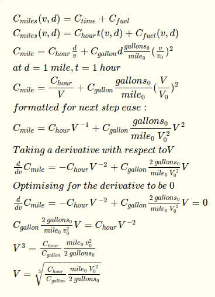

Imagine you're doing a long journey on a straight highway.
You want to calculate the optimal speed to drive at.
An optimal speed accounting for how much your time is worth, but also fuel costs.
So, assuming your hour costs however much, and you know your MPG at a specific speed, here is the proof for the optimal speed.

The reasoning behind the fuel consumption being quadratic, is that drag is quadratic.
However actual fuel costs are hard to calculate.
It is easy however, to create a quick equation where doubling velocity quadruples fuel being consumed.
To use this calculator practically: drive between 2 fuel stations with cruise control on at a consistent speed.
Knowing the distance and fuel consumption between them, you can determine MPG for the speed you cruise controlled at.
Couple major points:
This is assuming you're travelling at one constant speed
on a flat road (though this doesn't matter too much because gravity is a conservative force)
Without refuelling
You're driving a gasoline car (this works for electric cars too, but DO NOT USE MPGe, use miles/KWH and cost of KWH)